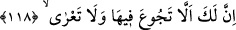
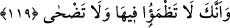

ekin ekiyordu. (Onunla çalışırken yoruluyor ve) alnından çıkan terleri siliyordu. İşte
onun yorgunluğu budur.”
Fakir (Bursevî) der ki: Görünen o ki İblis Hz. Adem’e olan düşmanlığı sebebiyle,
onun cennetten çıkmasına sebep olmak için onun çıkmasına sebep olacak işe teşvik
etmekten geri durmamıştır. Hakîkatte şakâvet, kendisine yasaklanan şeye girişmekten
ileri gelmiştir. Anla!
et-Te’vîlâtü’n-Necmiyye’de şöyle der: “Bu, Hakk’ın huzurundan uzak olma
şakâvetidir. Eğer tevbe ve istiğfar ile Hakk’ın civârında yakınlık (kurb) makamına
dönmez ise… Burada işâret vardır ki Allâh’a isyan ile İblis’in emrini yerine getirmek,
kişiyi kalb cennetinden uzaklaştırır. O’nun huzûruna yükselip nice mânevî dereceleri
kat’etmiş olsa da beşeriyyet arzına düşürür.”
118. Şimdi burada senin için ne acıkmak vardır, ne de çıplak kalmak.
Ona dedik ki: “Şimdi burada senin için ne acıkmak vardır,” yani cennette olduğun
sürece acıkmayacaksın. Çünkü orada bütün nimetler, istifadeye hazır vaziyettedir. “Ne
de çıplak kalmak.” Elbise bulmak için sıkıntı çekmeyeceksin. Çünkü cennette bütün
elbiseler mevcuddur...
119. Yine burada sen, susuzluk çekmeyecek, sıcaktan da bunalmayacaksın.
“Yine burada sen, susuzluk çekmeyecek,” Çünkü, pınarlar ve nehirler cennette daimâ
akmaktadır. “sıcaktan da bunalmayacaksın” yani cennette güneşin sıcaklığı sana isabet
etmeyecek. Esasen orada güneş yoktur ve cennet ehli “uzamış gölgeler” altındadırlar.
(Bk. el-Vâkıa, 56/30)
Bu iki âyette acıkmama ve susamamanın birbirinden ayrılması, ikisinin tek bir nimet
sanılmaması içindir. Kezâ çıplak kalmama ile güneşin sıcağından bunalmamanın bir
yerde zikredilmemesi de aynı hikmete mebnîdir.
et-Te’vîlâtü’n-Necmiyye’de şöyle der: “İşâret etmektedir ki, her ne kadar cennet bâkî
ve Hakk’a yakın olsa da, hayvânî nefsin arzu ettiği nimetlerle doludur. Tıpkı fânî
dünyada nefsin faydalandığı nimetler gibi behîmî arzuların tatmin olacağı yiyecek,
içecek, giyecek ve nikâhlanacaklarla doludur..”